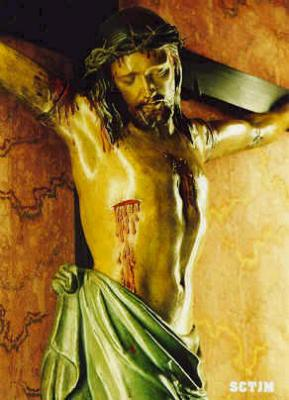
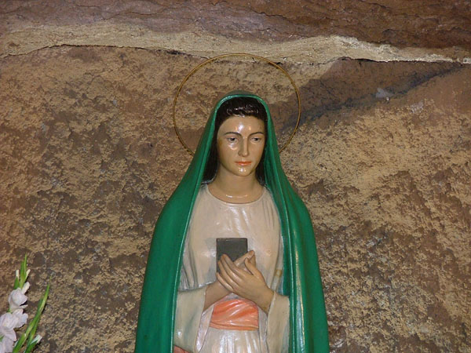
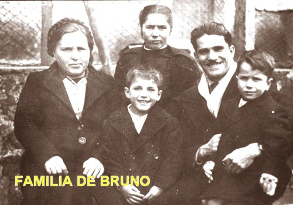
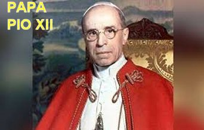

=“O AMOR É MAIS FORTE”=
MÃOS LUMINOSAS
Entrei na caverna, determinado a
dar um soco no ser estranho, mas a caverna estava vazia! Então saí 
- "DEUS, salve-nos”!
Então, de repente vi duas delicadas mãos emanando raios luminosos, se movendo no espaço em minha direção e senti que elas tocaram o meu rosto. Tive a sensação de que as mãos estavam rasgando os meus olhos. Naquele momento senti pequena dor e não enxerguei mais nada, fiquei numa profunda escuridão... Quando consegui abrir os olhos novamente, vi uma luz radiante iluminando cada vez mais e nela tive a nítida impressão de distinguir a figura de uma "Bela Dama", com uma deslumbrante e maravilhosa beleza celestial!
Tal beleza me deixou impressionado! Eu, o inimigo inveterado do catolicismo e, especialmente do culto mariano, estava cheio de espanto e com um profundo respeito. Diante daquela Aparição Celestial, me senti totalmente imerso numa profunda e doce alegria, como nunca a minha alma havia conhecido anteriormente. Fui invadido por uma alegria incomum, indescritível e adorável. Então consegui enxergar a visão de uma jovem e linda mulher, envolvida no esplendor de uma luz dourada. ELA se mantinha séria e suavemente estática. Admirado fui plenamente conquistado pelo encanto de tanta beleza, atraído por aquela luz que, embora intensa, não ofendia a vista, mas inundava com uma doçura sobrenatural. A mulher vestia uma túnica branca brilhante com uma faixa rosa na cintura. Tinha cabelos pretos, longos, um pouco salientes do véu verde-gramado que a cobria dos ombros até os Pés. Os Pés estavam descalços saindo debaixo do manto e apoiados sobre uma pedra de tufo também cercada pela luz. Na mão direita, ELA segurava um livro cinza, que apoiava no peito e sobre o qual descansava a mão esquerda. Acima de tudo, o que me deixava completamente fascinado era a expressão firme do rosto daquela mulher: um rosto no qual a sinceridade, a pureza da inocência, a força da graça, a majestosa gravidade do porte, estava tudo plenamente harmonioso e de um modo impressionantemente belo. Vi que a “Bela Dama”, moveu lentamente a mão esquerda e apontou para algo em seus pés. Olhei e vi no chão um pano preto em cima de uma cruz quebrada.
Bruno continuou sua narrativa:
Compreendi que aquele pano preto queria significar uma roupa rasgada e desprezada, que junto com a cruz quebrada, e demais sinais de distinção (de separação), estavam aludindo à batina de religiosos e consagrados que abandonaram a fé, fato concretizado por muitos religiosos e padres, na época.
-"Meu primeiro impulso foi chorar, mas minha voz morreu na garganta".
Na continuidade, a Aparição quase num gesto de me oferecer o livro que ELA segurava, disse num tom inegavelmente suave:
- "A DIVINA TRINDADE está nele (Naquele Livro – na BÍBLIA). EU SOU a VIRGEM DA REVELAÇÃO".

E neste momento, um perfume misterioso e indefinível inundou todo o ambiente, cobrindo o cheiro desagradável que existia.
NOSSA SENHORA falou:
- "Quero lhe dar uma prova segura desta realidade DIVINA que está vivendo, a fim de que você possa excluir qualquer outra motivação desta reunião, incluindo a do inimigo infernal. E este é o sinal: Quando encontrar um Padre na igreja ou na rua, aproxime-se dele e fale com esta expressão: "Pai, eu tenho que falar com ela”! Se ele responder: "AVE MARIA, filho, o que você quer”? Peça-lhe para parar, porque é a pessoa que EU escolhi. Então, você lhe manifestará o que estiver no seu coração, e deverá lhe obedecer. Ele, então, lhe indicará outro padre com estas palavras: "O seu caso deverá ser tratado pelo Padre tal..."
- "Então, depois você irá ao Santo Padre, o Pastor Supremo da Cristandade, e pessoalmente entregará MINHA Mensagem a ele. Alguém a quem eu lhe indicar, o conduzirá ao Papa”.
Silenciosamente, NOSSA SENHORA virou, deu dois passos e desapareceu na direção da Basílica de São Pedro. Bruno só conseguiu ver a sua capa. A VIRGEM SANTÍSSIMA mostrou a Bruno que o livro em sua mão, era uma Bíblia Sagrada! Para ele entender que o Livro Sagrado mostrava realmente que:
“ELA era Virgem Imaculada, e que Assumiu o Céu em Corpo e Alma”!
RETORNO AO LAR
Recuperando-se de
todas aquelas inesquecíveis emoções, Bruno e os três filhos fizeram o caminho de
volta 
Entretanto, antes de chegar a casa, decidiram passar na igreja de “Tre Fontane”, onde Bruno relembrou com Isola, sua filha, a oração da Ave Maria, que ele não se lembrava mais. Quando começou a recitar a oração, sentiu-se movido por uma profunda emoção e um forte arrependimento. Chorou muito e rezou por longo tempo.
Ao sair da igreja, comprou chocolate para os filhos e disse-lhes com seriedade, para que eles não contassem essa história a ninguém. Todavia, chegando a casa, não podiam deixar de contar o acontecimento a própria mãe. A esposa de Bruno ficou admirada e agradecida, pois reconheceu imediatamente a mudança ocorrida, que logo se manifestou no maravilhoso perfume da união fraterna e amorosa que emanava de seu marido e dos filhos. Sorrindo agradeceu a MÃE DE DEUS, e interiormente perdoou Bruno pelos sofrimentos dos anos passados.
EM BUSCA DA PROVA
Do dia 12 ao dia 28 de Abril, Bruno procurou exaustivamente encontrar o Sacerdote que lhe desse a resposta certa, ensinada pela VIRGEM MARIA. Mas não encontrou o Sacerdote indicado. Todos com os quais falou, nem entendiam o que ele perguntava. Assim, depois de diversas tentativas e decepções sofridas na busca de encontrar o Padre indicado por NOSSA SENHORA, sua esposa Iolanda sugeriu que ele fosse à Paróquia de Todos os Santos, que estava próxima de onde moravam. Então ele aceitou e foi, mas não falou imediatamente com o Pároco, que o conhecia como “inimigo da Igreja”, mas conversou com Dom Frosi que também se encontrava na Igreja, dizendo: “Pai devo falar com você”... Dom Frosi respondeu: “Ave Maria, filho”. Era a “confirmação” que ele queria ouvir. Dom Frosi de imediato o encaminhou a outro Sacerdote que cuidava daqueles assuntos. Bruno foi apresentado a Dom Gilberto Carniel, que tratou da formação religiosa de Bruno e da sua Esposa Iolanda até a “abjuração” (renuncia dos erros), que ocorreu no dia 7 de Maio de 1947, data em que a família de Bruno Cornacchiola retornou à Igreja Católica.
OPORTUNA VISITA AO SUMO PONTÍFICE
Bruno continuou com sua narrativa:

No dia 9 de dezembro de 1949, o Santo Padre Pio XII convidou os homens que trabalhavam no Transporte de Bondes de Roma, acompanhados pelo Padre Rotondi, para rezarem o Santo Rosário na companhia dele em sua Capela particular no Vaticano. O resultado do encontro, Bruno Cornacchiola descreve para nós:Eu também estava entre os trabalhadores. Ocultamente carregava comigo a adaga e a Bíblia Protestante, em que estava escrito: “Esta é a morte da Igreja Católica, com o Papa na cabeça”. Eu queria entregar a adaga e a Bíblia ao Santo Padre.
Assim, depois que terminou as orações do Rosário, o Sumo Pontífice perguntou:
- "Algum de vocês quer falar comigo?"
Ajoelhei-me e disse: - "Santidade, sou eu!"
Os outros trabalhadores abriram caminho para a passagem do Papa; ele se inclinou para mim, colocou a mão no meu ombro, aproximou o rosto do meu e perguntou:
- "O que é meu filho”?
- "Santidade, aqui está a Bíblia protestante que interpretei mal e com a qual matei muitas almas”.
E também chorando, entreguei a adaga na qual estava escrito: “Morte ao Papa”, e sussurrei:
- "Desculpe-me Senhor por ousar e pensar tanto. Planejei matá-lo com esta adaga”!
O Santo Padre pegou os objetos, olhou para mim, sorriu e disse:
- "Querido filho, com isso você não faria nada além de dar um novo mártir à Igreja, mas a CRISTO, com sua atitude atual, você demonstrou a vitória do "Amor de DEUS".